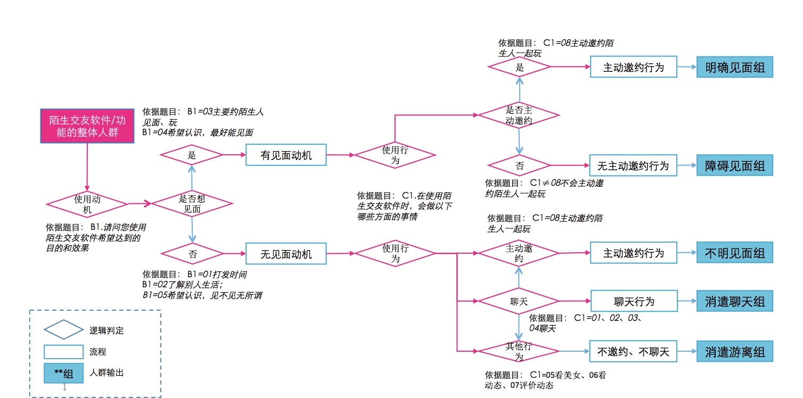
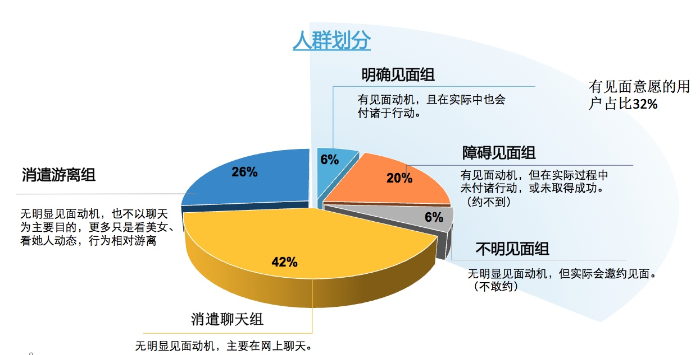

董总观点：
- 降低交互次数，通过交互质量解决临门一脚的问题
- 引导男用户填资料
- 提高男用户付出成本
- 通过男用户内容对其贴标签，用少量相关性信件内容提升交互质量
新业务部思路
较低交互次数，提高交互质量。 将浅交互在信箱外完成。
头轻脚重是以前交互次数多的主要原因。
- 继承有缘网多年积累（策略是对用户洞察的一部分），人多机会多仍是我们应坚持的方向。
- 引导女性用户活跃，创造更丰富的多媒体内容（以 图文 和 轻视频为主），通过内容创造可勾搭机会。让男用户在勾搭过程中建立对勾搭对象的全方位印象，使其付出稍微多一些的勾搭成本。ps： 以往的勾搭成本太低，用户对策略来的女用户没有印象，所以只能通过大量的交互让男用户上钩，这个是鱼饵问题。
- 勾搭方式增多，会大大增加真实性和趣味性
- 由于用户勾搭成本太低（批量打招呼），男用户将信箱作为了甄选女用户的场景，交互多有其合理性。场景做足是解决问题的关键，可以减低关键交互数量。
视频网络技术达到 快手水平 上升到战略层面
作业 消费者旅程
各位同学：
阿波罗项目已经开始一个多月了，通过AB两面和技术部的同事全力奋战，V3.0版本得以顺利的发布，感谢大家辛勤的工作。阿波罗项目的目的是建立产品海拔高度，为公司未来的发展提供优秀的可扩展的基础。我们应该怎么做，应该怎么思考？
从流量经济到场景革
流量变现是一个非常简单粗暴的低级模式。无论电商还是传统门店，不仅需要流量，更需要生活场景的实时触发和体验感的真实升级。
用户定义

